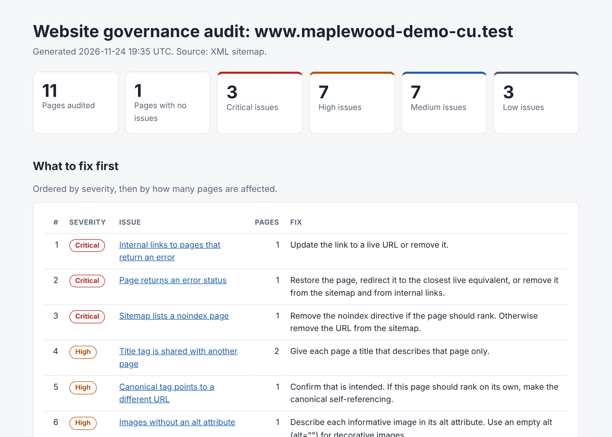

Overdraft protection

How it works
Overdraft protection is extended subject to eligibility requirements established by the credit union, and the availability of the service is contingent upon the member maintaining an account in good standing for a period of not less than ninety consecutive days preceding enrollment.
Fees and limitations
Where a transaction would otherwise result in a negative available balance, the credit union may, at its sole discretion, authorize and pay the item, in which case the applicable fee disclosed in the current fee schedule will be assessed against the account, notwithstanding any subsequent deposit made on the same business day.
Members who anticipate recurring shortfalls are encouraged to consider alternative arrangements, including the linkage of a savings account or the establishment of a line of credit, each of which is generally associated with lower cumulative costs. To enroll, click here.